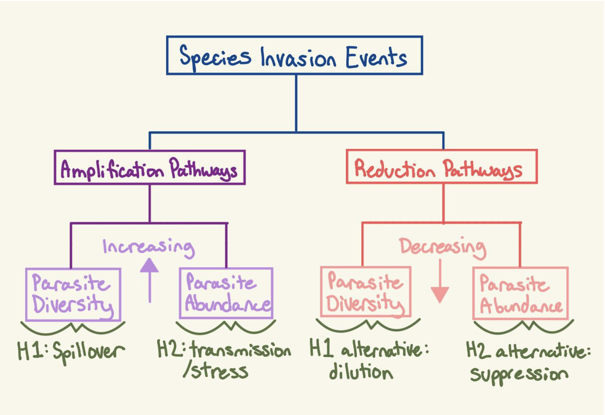
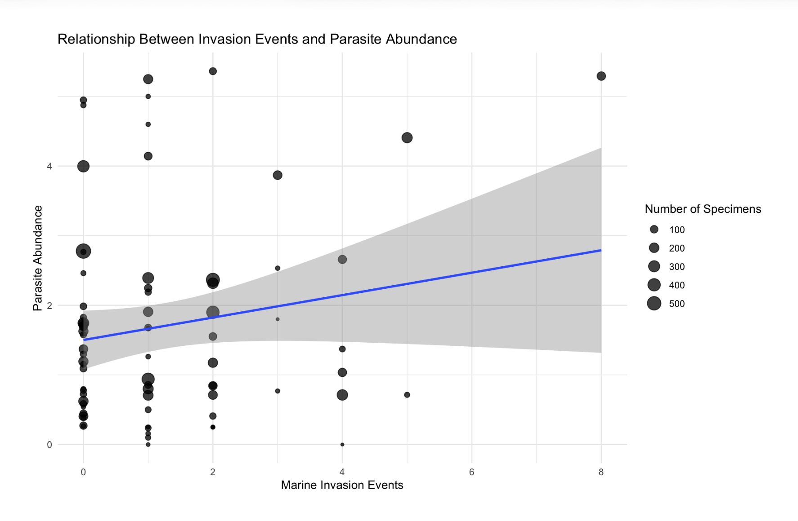
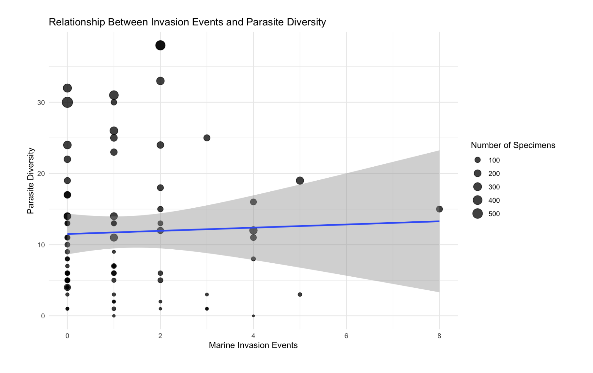
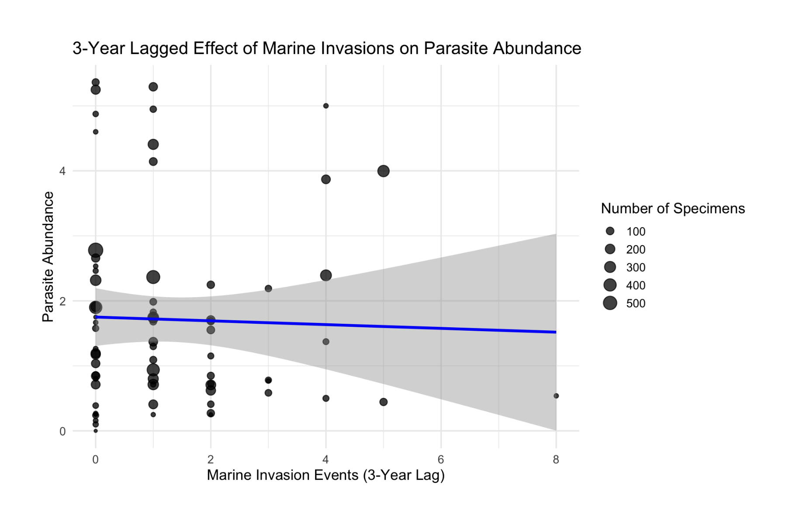
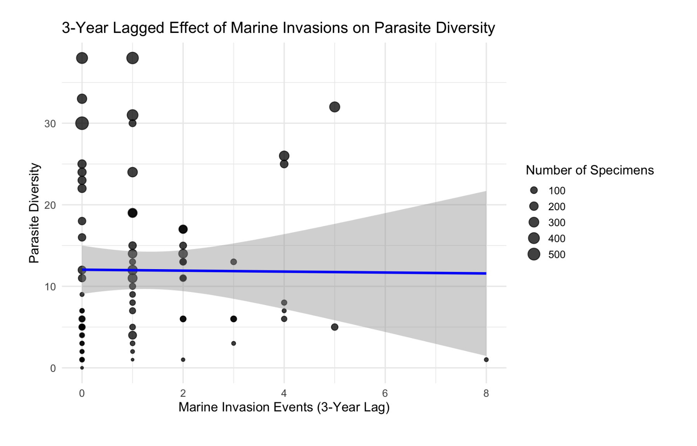

Figure 1: Project Poster summarizing the interactions between invasive species and native parasite communities in the Puget Sound.
Introduction
Parasites are integral components of ecological communities, shaping host population dynamics, food-web structure, and biodiversity across trophic levels (Poulin 2007; Lafferty et al. 2008). Despite their importance, parasites are frequently overlooked in ecological monitoring, leaving substantial gaps in our understanding of how human-driven disturbances influence parasite diversity and abundance (Carlson et al. 2020). Because parasite transmission relies on interactions among hosts, intermediate hosts, and environmental conditions, long-term shifts in parasite communities can serve as sensitive indicators of broader ecosystem change (Marcogliese 2005). One major anthropogenic driver capable of restructuring these interactions is the introduction of non-native species.
Biological invasions are widespread in marine and estuarine systems and can substantially alter host community composition, trophic pathways, and disease dynamics (Ruiz et al. 1997; Molnar et al. 2008). Several conceptual models predict how invasions may influence parasites in native hosts. The spillover hypothesis (H1) proposes that invaders introduce novel parasites or amplify existing parasite transmission, increasing parasite diversity in native hosts (Daszak et al. 2000). The transmission/stress hypothesis (H2) predicts that invasions elevate parasite abundance by altering host density, behavior, or physiological stress, increasing transmission opportunities (Lafferty & Kuris 2005). Alternatively, the dilution hypothesis (H1 alternative) suggests that parasite diversity may decline when invaders disrupt native transmission pathways or reduce native host density (Keesing et al. 2006). Similarly, the suppression hypothesis (H2 alternative) proposes that parasite abundance may decrease if invaders interrupt life cycles, outcompete native hosts, or shift energy flow away from parasite-dependent pathways (Torchin et al. 2003). Together, these paired hypotheses outline a continuum from parasite amplification to parasite reduction following species introductions.
Puget Sound, a semi-enclosed estuarine system in the Pacific Northwest, provides an ideal setting to test these predictions. The region has undergone more than a century of species introductions via shipping, aquaculture, and live trade (Wonham & Carlton 2005). At the same time, natural history collections preserve long-term parasite records from native fish species, enabling reconstruction of parasite community metrics across multiple decades (Galbreath 2019). By pairing these museum-derived parasitological data with invasion timelines, it becomes possible to ask whether system-wide parasite abundance or diversity has changed in concert with annual invasion activity. In my study, annual marine species invasion activity is defined as the number of non-native fish species first detected in a given year, allowing for a standardized metric of invasion pressure through time.
The goal of my study is to determine whether biological invasions into Puget Sound are associated with long-term changes in native parasite communities at the ecosystem scale. To address this, I evaluate relationships between annual invasion frequency and two key parasite metrics, parasite abundance and parasite diversity, using correlations, linear models, negative binomial generalized linear models, and temporal lag analyses. These analyses assess system-level patterns rather than species-specific trends. My study tests two primary hypotheses, each paired with an alternative directional prediction:

Research Hypotheses
By integrating invasion histories with long-term parasitological data, my study provides one of the first system-wide assessments of whether contemporary marine invasions have left measurable signatures on native parasite communities in Puget Sound.
Methods
Parasite data were compiled from historical dissections of marine fishes archived in regional museum collections (Wood et al. 2023). Each record included year of collection, host species identity, parasite taxon, and parasite counts per individual host. Only native fish hosts were retained to ensure that parasite metrics reflected changes in native parasite communities rather than parasites introduced alongside invasive species. Records lacking year information were excluded prior to analysis.
Invasion records were obtained from the National Exotic Marine and Estuarine Species Information System (NEMESIS), which documents verified first-detection dates for non-native marine and estuarine species across U.S. coastal systems (Fofonoff PW, Ruiz 2018). Only species classified as both non-native and established were retained. For each invasion record, the earliest confirmed year of detection was extracted, and annual invasion pressure was calculated as the total number of newly detected species per year.
To align parasite and invasion datasets temporally, parasite data were aggregated by year. For each calendar year, mean parasite abundance was calculated as the average number of parasites per individual host examined, while parasite diversity was calculated as the number of distinct parasite taxa observed across all hosts that year. Annual sampling effort was explicitly quantified as the number of host records per year, which was used to account for unequal effort over time. All data cleaning, transformation, and aggregation were conducted in R (version 4.3) using the packages tidyverse, dplyr, tidyr, ggplot2, stringr, and MASS.
To evaluate whether parasite communities responded to invasions with a temporal delay, a 3-year lagged invasion variable was created by shifting annual invasion counts forward by three years. This allowed testing of both immediate and delayed effects of invasion pressure on parasite abundance and diversity. Years that could not be assigned a lagged invasion value due to insufficient data were excluded from lagged analyses.
Relationships between invasion pressure and parasite metrics were visualized using scatterplots with ordinary least squares trendlines. The number of host records per year was incorporated visually by scaling point size in all plots, allowing interpretation of patterns while accounting for differences in sampling intensity. Separate figures were generated for non-lagged and 3-year-lagged relationships for both parasite abundance and parasite diversity.
Exploratory statistical relationships were examined using both Pearson’s product-moment correlation and Spearman’s rank correlation tests. Pearson correlations were used to assess linear associations, whereas Spearman correlations were used to detect monotonic but potentially non-linear relationships. Correlations were conducted separately for each parasite metric using both non-lagged and lagged invasion variables, and all tests were two-tailed.
To formally test for invasion effects while accounting for unequal sampling effort and temporal trends, generalized linear models were fitted using negative binomial regression. Parasite diversity is inherently count-based, and mean parasite abundance represents aggregated count information at the annual scale; therefore, a count-based modelling framework was applied. All models included a log-transformed offset term to correct for differences in annual sampling effort, and calendar year was included as a covariate to control for long-term trends unrelated to invasions.
Separate models were constructed for parasite abundance and diversity using both non-lagged invasion pressure and the 3-year lagged metric as predictors. For comparison, Poisson models with identical structure were also fitted, and model performance was assessed using Akaike Information Criterion (AIC). Negative binomial models consistently outperformed Poisson models, indicating greater suitability for the observed variance structure.
Model coefficients were interpreted to evaluate the direction and strength of invasion effects on parasite communities. Positive relationships were interpreted as consistent with hypotheses involving increased parasite transmission, accumulation, or spillover associated with invasions, whereas negative relationships were interpreted as consistent with parasite dilution, suppression, or disruption of parasite life cycles. Including both immediate and lagged invasion metrics allowed evaluation of whether parasite responses occurred rapidly or emerged only after invasive species had become established.
Results
Across all non-lagged analyses, there was no statistical evidence that annual marine invasion events predicted either parasite abundance or parasite diversity in native Puget Sound fishes. Pearson and Spearman correlation tests revealed weak, non-significant associations between invasion count and mean parasite abundance (Pearson r = 0.173, p = 0.136; Spearman ρ = 0.037, p = 0.749) as well as between invasion count and parasite diversity (Pearson r = 0.036, p = 0.758; Spearman ρ = 0.029, p = 0.801). These results indicate that neither parasite metric increased in years with higher invasion activity.
Negative binomial generalized linear models, which accounted for overdispersion, temporal trends, and variation in sampling effort, supported these findings. In models predicting parasite abundance, invasion count was not a significant predictor (β = 0.0028, SE = 0.0863, p = 0.974), and year also showed no significant effect (p = 0.634). Similarly, parasite diversity showed no relationship with invasion activity (β = −0.0205, SE = 0.0386, p = 0.596), and no significant temporal trend was detected (p = 0.333). AIC comparisons strongly favored negative binomial models over Poisson models, indicating that negative binomial models better fit the data than Poisson models, consistent with overdispersion commonly observed in ecological count data.
Three-year lagged analyses likewise revealed no delayed effects of invasion activity on native parasite communities. Neither parasite abundance nor parasite diversity showed significant relationships with invasion events that occurred three years earlier. Correlation tests between lagged invasion counts and parasite abundance were non-significant (Pearson r = −0.031, p = 0.793; Spearman ρ = −0.056, p = 0.637), as were correlations for parasite diversity (Pearson r = −0.009, p = 0.938; Spearman ρ = 0.106, p = 0.371).
Lagged negative binomial models reinforced these results. Invasion activity three years prior did not significantly predict parasite abundance (β = −0.0695, SE = 0.1005, p = 0.489) or parasite diversity (β = 0.0314, SE = 0.0427, p = 0.462), and year remained non-significant in both models. As with the non-lagged analyses, negative binomial models consistently outperformed Poisson models based on AIC, indicating the necessity of accounting for overdispersion in parasite count data.
Collectively, these results demonstrate that variation in annual marine species invasion activity, whether assessed in the same year or with a three-year temporal lag, does not predict system-wide changes in parasite abundance or parasite diversity in native Puget Sound fishes. Consequently, neither the spillover and transmission/stress hypotheses nor their corresponding alternative dilution and suppression hypotheses were supported at the community scale in this system.

Scatterplot showing the relationship between the number of newly established non-native marine species recorded per year and mean parasite abundance in native fishes. Each point represents a calendar year. Point size is scaled by the number of host specimens examined that year (Number of Specimens), reflecting variation in sampling effort. The fitted line shows an ordinary least squares linear regression with 95% confidence interval shading. No significant relationship was detected between invasion activity and parasite abundance.

Scatterplot showing the relationship between the number of newly established non-native marine species recorded per year and parasite diversity in native fishes. Parasite diversity was calculated as the number of unique parasite taxa observed per year. Each point represents a calendar year, with point size scaled by sampling effort (Number of Specimens). The fitted line shows an ordinary least squares linear regression with 95% confidence interval shading. No significant relationship was detected between invasion activity and parasite diversity.

Scatterplot showing the relationship between the number of newly established non-native marine species recorded three years earlier and mean parasite abundance in native fishes. Each point represents a calendar year, and point size is scaled by the number of host specimens examined that year (Number of Specimens), reflecting variation in sampling effort. The fitted line shows an ordinary least squares linear regression with 95% confidence interval shading. No significant lagged relationship was detected between invasion activity and parasite abundance.

Scatterplot showing the relationship between the number of newly established non-native marine species recorded three years earlier and parasite diversity in native fishes, calculated as the number of unique parasite taxa observed per year. Each point represents a calendar year, and point size is scaled by annual sampling effort (Number of Records). The fitted line shows an ordinary least squares linear regression with 95% confidence interval shading. No significant lagged relationship was detected between invasion activity and parasite diversity.
Discussion
Contrary to predictions that marine species invasions would significantly alter native parasite communities, this study found no evidence that annual invasion activity predicted parasite abundance or parasite diversity in native Puget Sound fishes. Neither immediate nor three-year-lagged invasion pressure explained variation in either parasite metric, and all correlation and model-based analyses consistently indicated weak, non-significant relationships. Accordingly, neither the spillover nor transmission/stress hypotheses were supported, and no evidence for parasite dilution or suppression was observed (Keesing et al. 2006; Johnson and Thieltges 2010). These findings suggest that, at the community scale examined here, marine invasions in Puget Sound have not produced detectable, system-wide shifts in native parasite dynamics over the time period analyzed (Ricciardi et al. 2013; Molnar et al. 2008; Ruiz et al. 1997).
One possible explanation for the absence of observed effects is that invasive species in this system may not function as effective hosts for native parasites or may contribute negligibly to parasite transmission networks. Host competence varies widely across species, and many invaders may represent trophic or physiological dead ends for parasites rather than reservoirs (Poulin 2007; Poulin 2011; Torchin et al. 2003). If invasive species fail to amplify parasite populations, invasion pressure alone would not be expected to increase parasite abundance or diversity in native hosts (Torchin et al. 2003). Alternatively, invasive species could introduce parasites that are highly host-specific and therefore remain largely restricted to the invader, limiting measurable spillover into native fishes (Poulin 2011).
The lack of support for both spillover and dilution hypotheses further suggests substantial ecological buffering within this system. Marine food webs are complex and often characterized by high redundancy in host species and transmission pathways. Such redundancy may stabilize parasite communities even as new species are introduced (Ives et al. 2003; Lafferty et al. 2008). Many marine parasites rely on benthic invertebrates or multi-host life cycles, reducing the likelihood that changes in fish community composition alone directly restructure parasite dynamics (Poulin and Cribb 2002; Lafferty et al. 2008). Additionally, environmental heterogeneity and seasonal variation in marine systems may overwhelm the comparatively modest ecological effects of annual invasion events, particularly when invasion frequency is low relative to natural variability in host density and parasite transmission (Harvell et al. 2002; Harvell et al. 2009; Marcogliese 2001).
Temporal scale may also play an important role in shaping detectability of invasion effects. Although a three-year lag was included to account for delayed responses, some invasion impacts may only emerge over longer timescales, especially if invasive species require extended periods to establish large, reproductively stable populations (Sakai et al. 2001). It is also possible that parasite communities respond nonlinearly to invader abundance or biomass rather than to simple invasion counts (Poulin 2007). Because invasion pressure was measured using first-detection records, true invasion intensity, geographic spread, and population sizes of invaders were not captured, potentially limiting the ability to detect biologically meaningful effects (Ricciardi et al. 2013; Wonham and Carlton 2005).
Another important consideration is spatial heterogeneity. This study aggregated parasite records across the Puget Sound region, which may mask localized effects occurring within particular bays, estuaries, or host populations. Invasions often proceed as spatially patchy processes, and their impacts may be evident only at finer geographic scales (Ruiz et al. 1997; Wonham and Carlton 2005). Pooling data across large regions can therefore reduce statistical power to detect site-specific effects (Gotelli and Colwell 2001). Similarly, taxonomic aggregation of parasite communities may obscure effects on individual parasite species or functional groups that respond differently to host turnover or environmental disturbances (Poulin 2007; Dobson et al. 2008).
Sampling structure may also contribute to the observed null results. Although the analysis is explicitly corrected for variation in sampling effort, museum collections are not generated through systematic monitoring programs and may reflect uneven temporal or spatial coverage (Galbreath et al. 2019). Collection bias toward certain host species, time periods, or locations may further complicate detection of invasion-driven changes (Gotelli and Colwell 2001; Galbreath et al. 2019). However, the consistency between correlation tests and model-based results suggests that sampling limitations alone are unlikely to fully account for the absence of detectable relationships.
Despite these limitations, the study benefitted from several strengths, including correction for uneven sampling effort, explicit temporal control, and model selection appropriate for count-based ecological data. Additionally, the consistency of null results across statistical approaches and lag structures increases confidence that findings reflect true biological patterns rather than analytical artifacts (Gotelli and Colwell 2001; Galbreath et al. 2019).
Importantly, null results do not imply that invasive species are ecologically neutral. Instead, the lack of a detectable effect at the community level highlights that parasite responses to invasion are context-dependent and may vary across systems depending on host specificity, transmission mode, and ecological integration of invaders (Poulin 2007; Ricciardi et al. 2013). In Puget Sound, invasive species may influence other ecological dimensions—such as competition, predation, or habitat structure—without measurably altering parasite dynamics in native fishes (Ruiz et al. 1997; Ricciardi et al. 2013).
Future research should consider incorporating direct measures of invader abundance, host competence, and infection intensity rather than relying solely on invasion history (Sakai et al. 2001; Ricciardi et al. 2013). Spatially explicit analyses, longitudinal field surveys, and parasite-level studies may further clarify when and where invasions alter disease dynamics. Additionally, genomic approaches could reveal cryptic transmission pathways or subtle shifts in parasite population structure that are not apparent from taxonomic data alone (Carlson et al. 2020).
In conclusion, this study provides no evidence that marine species invasions in Puget Sound have measurably altered parasite abundance or diversity in native fishes at the system-wide scale examined here. These findings underscore the importance of empirical testing of invasion hypotheses and highlight that biological invasions do not universally increase, suppress, or restructure parasite communities (Ricciardi et al. 2013; Molnar et al. 2008). Instead, invasion effects on disease dynamics appear to be highly system-specific, shaped by ecological context, species identity, and environmental variability (Poulin 2007; Marcogliese 2005). Together, these findings contribute to a growing body of evidence that invasion–disease relationships are not inherently directional and must be evaluated within the ecological and evolutionary context of each system (Lafferty and Kuris 2005; Poulin 2011).